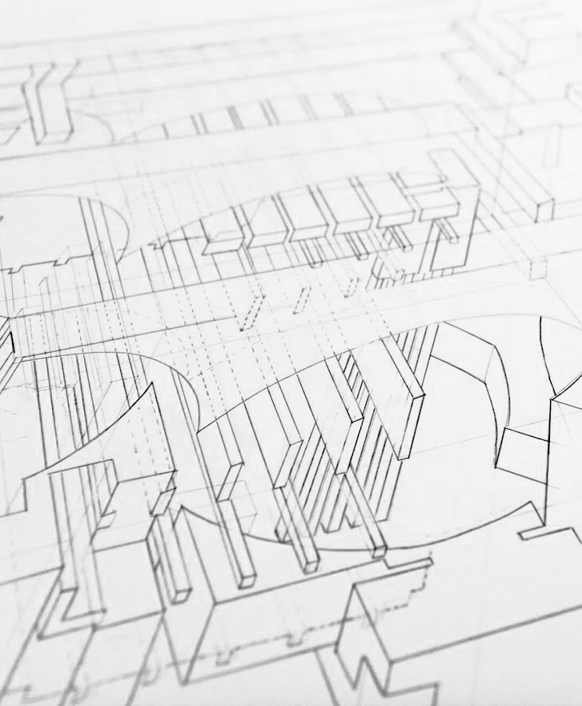

<html>
	<head>
		<title>Rebecca Yeap</title>
		<link rel="icon" href="assets/img/tagicon.png">
		<link rel="stylesheet" type="text/css" href="assets/css/bootstrap.min.css">
		<link rel="stylesheet" type="text/css" href="assets/css/axonometric.css">
		<meta name="viewport" content="width=device-width, initial-scale=1.0">
	</head>
</html>
<body>
	<div id="navbar">
		<div id="labels-container">
		<div class="headerlabels" style="display: flex;">
				<div class="about">
					<a href="about.html">ABOUT</a> 
				</div>
				<div class="work">
					<a href="work.html">WORK</a> 
				</div>
				<div class="nonwork">
					<a href="nonwork.html">WORK</a> 
				</div>
			</div>
		</div>
		<div>
			<!---->
		</div>
	</div>
	<div class= "container-fluid" id="about_block"> 
		<div class="row">
			<div class="col-md-6 offset-md-2">
				<div style="padding-top: 100px; margin-left: 50px">
					<h2>axonometric drawing</h2>
					<p>architecture | studio project</p>
				</div>
				<div class="row">
					<div class="col-md-6" style="padding-top: 20px;margin-left: 50px">
					<p>In the summer of 2017, I took ARCH 11A with Professor Darrel Fields at UC Berkeley College of Environmental Design. Over the 8-week course, I explored different spatial concepts and readings including crop, void, shadow, reflection, time/movement, figure/ground, phenomenal transparency, color, proportion, and projection.  These concepts led to a culmination of all my findings within the axonometric drawing. The plans and sections were transformed through the drawing to create a 3D space with multiple spatial readings.  
					 </p>  
					</div>
				
			</div>
		</div>
		<div class="row">
			<div class="col-md-8 offset-md-2"> 
				
			</div>
			
		</div>
	</div>
		
</body>
</html>